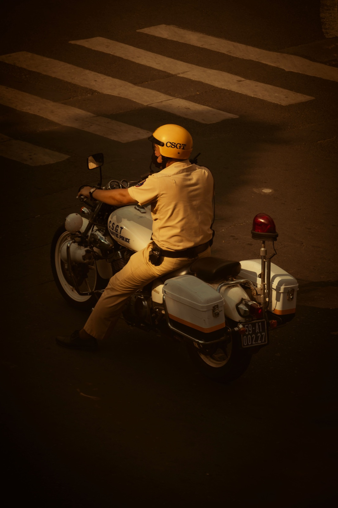
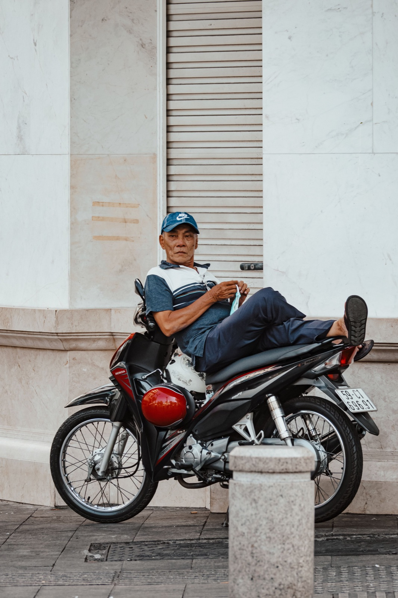

Можно ли ездить вдвоём на байке 50сс

По ровному Нячангу исправный 50сс может везти двух взрослых, но динамика и тормозной путь будут заметно отличаться от поездки в одиночку. Вопрос не только в мощности: важны общий вес, состояние мотора, тормозов, шин и конкретная модель.
Что изменится с пассажиром
- разгон станет медленнее, особенно со светофора;
- для обгона потребуется больше времени;
- тормозной путь увеличится;
- на подъёмах скорость заметно упадёт;
- неровности будут сильнее нагружать подвеску.
Поэтому опыт от одиночной поездки нельзя переносить на езду вдвоём один к одному. Первые километры проедь спокойно, без плотного трафика.
Как пассажиру правильно сидеть

Садиться и слезать нужно только после сигнала водителя, когда обе его ноги стоят на земле. Пассажир держится за поручни или водителя, смотрит вперёд и не делает резких движений. Оба едут в застёгнутых шлемах, ноги всё время стоят на пассажирских подножках.
Вес важнее цифры на пластике
Два лёгких человека по ровному городу и двое взрослых с рюкзаками на горном маршруте — совершенно разные условия. Допустимую нагрузку проверяй в документации конкретной модели. Если подвеска проседает, шина выглядит спущенной или байк плохо тормозит, поездку лучше отложить.
Город и подъёмы
Для коротких поездок по центру 50сс часто достаточно. Но серпантины, затяжные подъёмы и дальние маршруты требуют запаса тяги и исправных тормозов. Не пытайся компенсировать слабый разгон постоянной ездой «газ в пол».
Что проверить до поездки
- Давление и состояние обеих шин.
- Работу переднего и заднего тормоза.
- Пассажирские подножки и поручень.
- Свет, стоп-сигнал и зеркала.
- Свободный ход руля и состояние подвески.
Расширенный осмотр есть в нашем чек-листе проверки байка.
Как выбрать 50сс для пары
Смотрите не только на дизайн. Важны длинное сиденье, удобные подножки, живая подвеска и предсказуемые тормоза. Лучше приехать вдвоём и примерить посадку на месте. Сравнить основные конструкции поможет статья о типах байков 50сс.
Вывод
Ездить вдвоём на исправном 50сс по городу возможно, если модель рассчитана на вашу нагрузку. Просто закладывайте больше времени на разгон и торможение, а для подъёмов и дальних поездок оценивайте возможности байка без оптимизма.